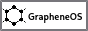
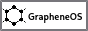

Welcome to nitrogenated.space!
This website was made by dan using pure HTML and CSS - No javascript!
Here you can find a small insight into my personal digital philosophy and myriad of shenanigans.
Recent updates
Highlights
- Newly appointed member of ESAB (European Society of Applied Biocatalysis)
- Finished FarCry 5 (amazing soundtrack)
- Seeing Nora Brown in late November
Research interests
- Neuropsychopharmacology
- Applied Biotechnology
- Natural Product Research
- Semiconductors and Microprocessors
- Computer graphics (check out Two Minute Papers)
 
